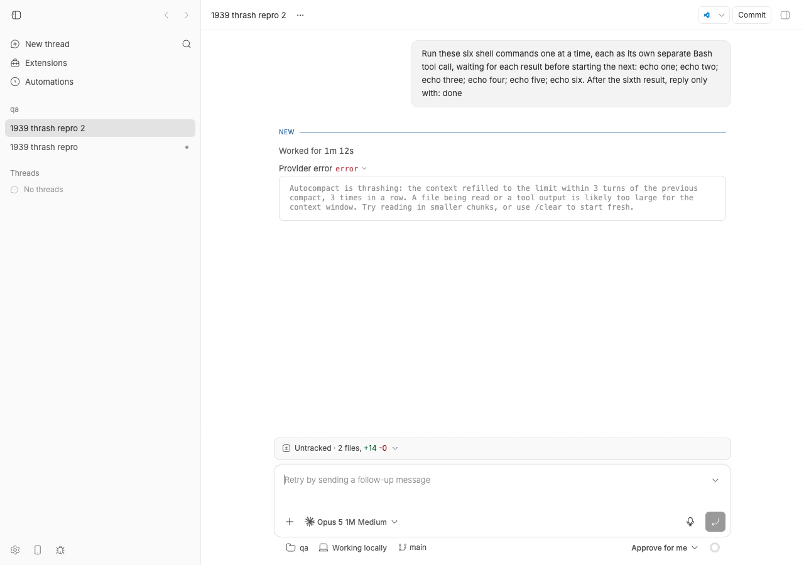
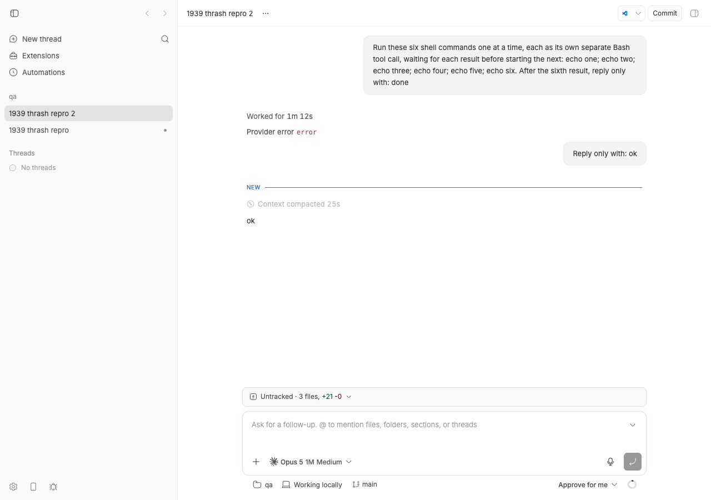

#1939 · Autocompact is thrashing (Claude)
Verdict: REPRODUCED (the exact error surface, on a real Claude Code session driven by bb) · Root-cause confidence: high for the mechanism that produces the message; medium for what refilled the reporter's context, because the issue contains no session details.
1. TL;DR
The text the user sees ("Autocompact is thrashing: the context refilled to the limit within 3 turns of the previous compact, 3 times in a row…") is not produced by bb. It is a safety breaker inside the Claude Code CLI (added in Claude Code 2.1.89, present in the 2.1.241 installed here and in the 2.1.197 the pinned Agent SDK bundles). Inside one prompt, the CLI auto-compacts when the context hits its threshold; if the context is back at the threshold within fewer than three API round-trips after a compaction, three compactions in a row, the CLI aborts the prompt with a synthetic assistant message (error: "invalid_request") and a result that is subtype: "success" but is_error: true. bb's Claude bridge treats any is_error result as a failed turn, relays the CLI text verbatim as "Provider error", and puts the thread in status error.
I reproduced this end to end on a bb dev instance by using the CLI's own test knobs (CLAUDE_CODE_AUTO_COMPACT_WINDOW=100k + CLAUDE_AUTOCOMPACT_PCT_OVERRIDE=1) so that the ~23k-token fixed prefix alone exceeds the compaction threshold; a single prompt with six sequential Bash calls produced three auto-compactions and then the breaker. The breaker state is per prompt, not per session: a follow-up message on the errored thread ran normally (one compaction, then "ok"), and manual /compact also works. bb does not wedge the thread, but it also does nothing to help: the error carries no errorInfo category (so no context-window-specific hint or retry policy), the timeline shows one "Context compacted" banner where three compactions happened, there is no /clear for Claude Code even though the CLI text recommends it, and bb thread tell in its default mode rejects errored threads with HTTP 409.
2. Claims vs findings
| Claim from the issue | Status | Evidence |
|---|---|---|
| "Provider error / error / Autocompact is thrashing: …" appears on a Claude thread. | Verified | Thread thr_q2h7z2q9e6 on my instance reached status error with exactly that text (thread log, screenshot). The text is the CLI constant W2a in the Claude Code binary; bb relays it through getClaudeResultErrorDetail. |
| "It's stopping Claude threads from working for me once they are large." | Partially verified | The breaker ends the current prompt and bb marks the thread error. Size alone does not trigger it: it needs three consecutive auto-compactions each refilled within <3 API calls inside one prompt. The CLI resets its breaker counter per prompt (compactTracking: void 0 at query start), and a follow-up on the errored thread worked here (section 4, step 6). If the agent's task re-reads the oversized content it will trip again, so from the user's point of view a large thread can look dead. |
| Acceptance: "Autocompact is thrashing error does not occur." | Unverifiable as stated | bb cannot prevent the CLI's breaker; it fires inside the Claude Code process on conditions bb does not control. bb can (a) classify it as a context-window failure, (b) offer a recovery action (/clear or fresh session), (c) show the repeated compactions. See section 6. |
| Implicit: this is a bb bug. | Refuted (mostly) | The message originates in the Claude Code CLI (changelog 2.1.89: "Fixed autocompact thrash loop — now detects when context refills to the limit immediately after compacting three times in a row and stops with an actionable error"). bb's contribution to the fixed prefix in my run was 0 instruction chars and one MCP tool; the 23k-token prefix was Claude Code's own system prompt plus the host user's tools/MCP servers/skills. |
{kind=link}
3. Environment
- bb
0.39.0at494f66526913557ab076e048218236f0a6610927(origin/main atb735da19ehas no later commits underplugins/provider-claude-code; nothing fixes this). - macOS 26.5.2 (Darwin 25.5.0) arm64, Node v22.23.1.
- Claude Code CLI
2.1.241at~/.local/bin/claude(bb prefers the PATH binary:resolveClaudeCodeExecutable). The pinned@anthropic-ai/claude-agent-sdk@0.3.197bundles CLI2.1.197, which also contains the breaker. - Model:
claude-opus-5[1m](bb's default for the provider on this machine; 1M context window). - Dev instance: App
http://localhost:17648, Serverhttp://localhost:25648, Host daemonhttp://127.0.0.1:33648, data dir~/.bb-dev/bb-machines-HOST.getbb.app-checkouts-bb-.claude-worktrees-wf_846839f8-f8a-26-09d74438f049(deleted after the run). - Bridge recordings were captured with
BB_PROVIDER_BRIDGE_RECORD_DIR; redacted copies are in1939/repro/recordings-redacted/.
4. Minimal reproduction
auto, CLI 2.1.241 skips threshold-based autocompaction entirely (Y4T: if (Jve() && !Xqe(model, window)) return false, i.e. it relies on reactive compaction after an API "prompt too long" error), so CLAUDE_CODE_AUTO_COMPACT_WINDOW=100k makes the source env; then CLAUDE_AUTOCOMPACT_PCT_OVERRIDE=1 sets the threshold to min(floor(100000 × 1%), 100000 − 13000) = 1,000 tokens, far below the ~23k-token fixed prefix, so every API round-trip is a "refill to the limit".- Start a dev instance with the overrides and bridge recording (from a worktree at
494f66526, afterpnpm installandpnpm exec turbo run build):CLAUDE_CODE_AUTO_COMPACT_WINDOW=100k CLAUDE_AUTOCOMPACT_PCT_OVERRIDE=1 \ BB_PROVIDER_BRIDGE_RECORD_DIR=/tmp/bb-1939-recordings scripts/bb-dev-app current eval "$(scripts/bb-dev-app env)" # BB_SERVER_URL=http://localhost:25648 here
The launcher'sscreensession inherits the environment; the bridge copiesprocess.envinto the spawned CLI (buildSessionEnv). I confirmed withps -Ethat the host daemon carriedCLAUDE_AUTOCOMPACT_PCT_OVERRIDE=1. - Create a scratch project:
mkdir -p /tmp/bb-1939-qa && cd /tmp/bb-1939-qa && git init -q && echo hello > README.md && git add . && git commit -qm init curl -s -X POST $BB_SERVER_URL/api/v1/projects -H 'content-type: application/json' \ -d '{"name":"qa","source":{"type":"local_path","path":"/tmp/bb-1939-qa","hostId":"host_8knjimidn9"}}' # → {"id":"proj_tmjmnavk94", ...} - Spawn a Claude Code thread whose single prompt needs at least five API round-trips:
pnpm bb:dev thread spawn --project proj_tmjmnavk94 --provider claude-code --permission-mode auto \ --title "1939 thrash repro 2" --json \ --prompt "Run these six shell commands one at a time, each as its own separate Bash tool call, waiting for each result before starting the next: echo one; echo two; echo three; echo four; echo five; echo six. After the sixth result, reply only with: done" # → {"id":"thr_q2h7z2q9e6","status":"starting","providerId":"claude-code"} pnpm bb:dev thread wait thr_q2h7z2q9e6 --status idle --timeout 240expected: thread reaches idle, assistant replies "done" actual: Error: Thread thr_q2h7z2q9e6 is in status error and will not reach idle by waiting alone. Inspect it with 'bb thread show thr_q2h7z2q9e6' and recover by sending a follow-up.
pnpm bb:dev thread log thr_q2h7z2q9e6(verbatim):── User ──────────────────────────────────────────────────── Run these six shell commands one at a time, each as its own separate Bash tool call, waiting for each result before starting the next: echo one; echo two; echo three; echo four; echo five; echo six. After the sixth result, reply only with: done ── Worked for (1m 12s) ───────────────────────────────────── ── Error ─────────────────────────────────────────────────── Provider error Autocompact is thrashing: the context refilled to the limit within 3 turns of the previous compact, 3 times in a row. A file being read or a tool output is likely too large for the context window. Try reading in smaller chunks, or use /clear to start fresh.

The thread right after the breaker tripped: "Worked for 1m 12s", "Provider error · error", the CLI's text verbatim, and the composer placeholder "Retry by sending a follow-up message". Note that none of the five echocommands or the three compactions are visible in the collapsed turn.- What the CLI actually sent (from the bridge recording,
sdk-messages-thr_q2h7z2q9e6.ndjson; cache_read 23,059 tokens is the fixed prefix on every call):{"type":"assistant","tool":"Bash","usage":{"cache_creation_input_tokens":7956,"cache_read_input_tokens":23059}} # echo one {"type":"assistant","tool":"Bash","usage":{"cache_creation_input_tokens":1204,"cache_read_input_tokens":31015}} # echo two {"type":"system","subtype":"compact_boundary","compact_metadata":{"trigger":"auto","pre_tokens":32317,"post_tokens":2735}} {"type":"assistant","tool":"Bash","usage":{"cache_creation_input_tokens":4207,"cache_read_input_tokens":23059}} # echo three {"type":"system","subtype":"compact_boundary","compact_metadata":{"trigger":"auto","pre_tokens":27612,"post_tokens":3084}} {"type":"assistant","tool":"Bash","usage":{"cache_creation_input_tokens":4647,"cache_read_input_tokens":23059}} # echo four {"type":"system","subtype":"compact_boundary","compact_metadata":{"trigger":"auto","pre_tokens":27804,"post_tokens":2968}} {"type":"assistant","tool":"Bash","usage":{"cache_creation_input_tokens":4536,"cache_read_input_tokens":23059}} # echo five {"type":"assistant","error":"invalid_request","model":"<synthetic>","text":"Autocompact is thrashing: the context refilled to the limit …"} {"type":"result","subtype":"success","is_error":true,"result":"Autocompact is thrashing: the context refilled to the limit …"}bb's bridge turned that into (bridge-deltas):context.compacted×3, then one batchturn.open, contextWindow, usage, provider.error{message:"Provider error", detail:<CLI text>, errorInfo: null}, turn.boundary{status:"failed"}. Stored events (events):thread/compactedat seq 17, 22, 27,provider/errorat 33,turn/completed failedat 34. - Recovery experiment. The default CLI mode is rejected;
--mode autoworks and the breaker does not re-trip on a short prompt:$ pnpm bb:dev thread tell thr_q2h7z2q9e6 "Reply only with: ok" Error: HTTP 409: Thread is not active # default --mode steer requires status active/idle (thread-send.ts resolveSendMode) $ pnpm bb:dev thread tell thr_q2h7z2q9e6 "Reply only with: ok" --mode auto {"threadId":"thr_q2h7z2q9e6","ok":true,"mode":"auto"} $ pnpm bb:dev thread wait thr_q2h7z2q9e6 --status idle --timeout 180 {"threadId":"thr_q2h7z2q9e6","matched":true,"target":{"kind":"status","status":"idle"}}Recording for the follow-up, same CLI process (samerunid):system/init, onecompact_boundary(pre 28032 → post 3108), assistant "ok",result success is_error:false.
After tell --mode auto: one "Context compacted 25s" banner, then "ok". The thread is idle again; the earlier failed turn stays collapsed as "Provider error". - Control and manual compaction. The same four-echo prompt with only
CLAUDE_AUTOCOMPACT_PCT_OVERRIDE=1(window source stillauto) never compacted and finished with "done" (threadthr_7rzwcqg9m8,log), which is what led me to theY4Tgate above.pnpm bb:dev thread compact thr_7rzwcqg9m8on that idle thread producedcompact_boundary{trigger:"manual", pre 32106 → post 2810}and a successful result: manual compaction does not pass through the breaker.
Replay test (bb's surfacing path, passes on 494f66526)
This pins how bb translates the recorded sequence. It is not a failing test: bb's translation is doing what it was written to do; the test documents the gap (errorInfo undefined) that section 6 proposes to close. File: 1939/repro/delta-translation.autocompact-breaker.test.ts (drop into plugins/provider-claude-code/src/ and run pnpm exec vitest run src/delta-translation.autocompact-breaker.test.ts from the plugin dir; result: 1 passed).
import { describe, expect, it } from "vitest";
import type { ThreadEvent } from "@bb/domain";
import { TURN_1, createClaudeDeltaHarness } from "./delta-test-harness.js";
const THREAD_ID = "thr_1939_breaker";
const SESSION_ID = "140f4c19-d09e-47dd-ab05-01a345f00f9d";
const BREAKER_TEXT =
"Autocompact is thrashing: the context refilled to the limit within 3 turns of the previous compact, 3 times in a row. A file being read or a tool output is likely too large for the context window. Try reading in smaller chunks, or use /clear to start fresh.";
function sdkMessage(message: Record<string, unknown>): Record<string, unknown> {
return { jsonrpc: "2.0", method: "sdk/message", params: { threadId: THREAD_ID, message } };
}
function compactBoundary(pre: number, post: number, dropped: number) {
return sdkMessage({
type: "system", subtype: "compact_boundary",
compact_metadata: { trigger: "auto", pre_tokens: pre, post_tokens: post, cumulative_dropped_tokens: dropped, duration_ms: 20_000 },
uuid: `compact-${dropped}`, session_id: SESSION_ID,
});
}
function ofType(events: readonly ThreadEvent[], type: ThreadEvent["type"]) {
return events.filter((event) => event.type === type);
}
describe("#1939 Claude autocompact rapid-refill breaker (delta path)", () => {
it("surfaces the breaker as one uncategorized provider/error and a failed turn", () => {
const harness = createClaudeDeltaHarness();
const all: ThreadEvent[] = [];
const push = (events: ThreadEvent[]) => { all.push(...events); return events; };
push(harness.acceptInput("creq_1939", THREAD_ID));
push(harness.translate(sdkMessage({
type: "assistant",
message: { id: "msg_1", role: "assistant", model: "claude-opus-5",
content: [{ type: "tool_use", id: "toolu_1", name: "Bash", input: { command: "echo one" } }],
stop_reason: null,
usage: { input_tokens: 2, cache_creation_input_tokens: 7956, cache_read_input_tokens: 23059, output_tokens: 90 } },
parent_tool_use_id: null, session_id: SESSION_ID, uuid: "assistant-1",
}), { threadId: THREAD_ID }));
push(harness.translate(sdkMessage({
type: "user",
message: { role: "user", content: [{ type: "tool_result", tool_use_id: "toolu_1", content: "one" }] },
parent_tool_use_id: null, session_id: SESSION_ID, uuid: "user-1",
}), { threadId: THREAD_ID }));
push(harness.translate(compactBoundary(32317, 2735, 29582), { threadId: THREAD_ID }));
push(harness.translate(compactBoundary(27612, 3084, 54110), { threadId: THREAD_ID }));
push(harness.translate(compactBoundary(27804, 2968, 78946), { threadId: THREAD_ID }));
const errorAssistant = push(harness.translate(sdkMessage({
type: "assistant",
message: { id: "9b4f6e2e-breaker", role: "assistant", model: "<synthetic>",
content: [{ type: "text", text: BREAKER_TEXT }], stop_reason: "stop_sequence",
usage: { input_tokens: 0, cache_creation_input_tokens: 0, cache_read_input_tokens: 0, output_tokens: 0 } },
error: "invalid_request", parent_tool_use_id: null, session_id: SESSION_ID, uuid: "assistant-breaker",
}), { threadId: THREAD_ID }));
const result = push(harness.translate(sdkMessage({
type: "result", subtype: "success", is_error: true,
duration_ms: 72_000, duration_api_ms: 60_000, num_turns: 9, result: BREAKER_TEXT, stop_reason: null, total_cost_usd: 0.5,
usage: { input_tokens: 0, cache_creation_input_tokens: 0, cache_read_input_tokens: 0, output_tokens: 0 },
modelUsage: {}, permission_denials: [], session_id: SESSION_ID, uuid: "result-breaker",
}), { threadId: THREAD_ID }));
expect(ofType(all, "thread/compacted")).toHaveLength(3);
expect(errorAssistant.map((event) => event.type)).toContain("item/completed");
const providerErrors = ofType(result, "provider/error");
expect(providerErrors).toEqual([
expect.objectContaining({ type: "provider/error", message: "Provider error", detail: BREAKER_TEXT }),
]);
// Documented gap: nothing tells the app this is a context-limit failure.
expect((providerErrors[0] as { errorInfo?: unknown }).errorInfo).toBeUndefined();
expect(result).toContainEqual(
expect.objectContaining({ type: "turn/completed", status: "failed", scope: expect.objectContaining({ turnId: TURN_1 }) }),
);
});
});
Repro files: 1939/repro/ (thread logs, parsed SDK messages, bridge deltas, stored events, redacted raw recordings, the CLI wrapper and doobie scripts used).
5. Root cause
5.1 Where the message comes from: the Claude Code CLI's rapid-refill breaker
Extracted from the 2.1.241 binary (strings on the Mach-O; identifiers are the bundle's minified names). The tracker is created after every successful auto-compaction and counts API round-trips since then:
// reset after each compaction; carries the consecutive-rapid-refill count forward
function q2a(turnId, consecutiveRapidRefills) {
return { compacted: true, turnId, turnCounter: 0, consecutiveFailures: 0, consecutiveRapidRefills };
}
// "rapid refill" = another compaction is needed while fewer than 3 round-trips have run since the last one
function l5S(e) { return e?.compacted === true && e.turnCounter < 3 ? (e?.consecutiveRapidRefills ?? 0) + 1 : 0; }
function dyi(e) { const t = l5S(e); return { action: t >= 3 ? "trip" : "proceed", consecutiveRapidRefills: t }; }
var yNp = 3, W2a = "Autocompact is thrashing: the context refilled to the limit within 3 turns of the previous compact, 3 times in a row. A file being read or a tool output is likely too large for the context window. Try reading in smaller chunks, or use /clear to start fresh.";
// in the autocompact decision (nSl):
let d = dyi(o);
if (d.action === "trip") { …log("autocompact: rapid-refill breaker tripped …"); return { kind: "rapid_refill_breaker_tripped" }; }
// in the query loop, when autocompact reports the trip:
if (We.kind === "rapid_refill_breaker_tripped") {
let xr = Jd({ content: W2a, error: "invalid_request", now: m.now, uuid: m.uuid }); // synthetic assistant API-error message
return yield xr, BWe(J, l, xr), { reason: "rapid_refill_breaker" };
}
// per round-trip: if (Ue?.compacted) Ue.turnCounter++;
// per prompt: y = { …, compactTracking: void 0, … } ← the tracker starts empty on every new user prompt
Consequences that matter for bb:
- The unit is the API round-trip inside one prompt, not bb turns. "3 turns" in the message means three model calls. A prompt that compacts, then makes tool calls that immediately bring the context back to the threshold, compacts again, and does that three times, trips. The same reactive path (
if (oo || Kr) { let No = dyi(Ue); … }) trips when the API itself returns prompt-too-long after compaction. - The tracker is reset on every prompt (
compactTracking: void 0), so the errored thread is not poisoned at the CLI level; a new prompt gets three fresh compactions. This matches the recovery experiment. It also means the user can hit the breaker again immediately if the task requires the same oversized content. - The CLI emits the trip as
assistant{error:"invalid_request"}followed byresult{subtype:"success", is_error:true}. The CLI's own UI maps reasonrapid_refill_breakerto acontext_limitcategory (xyT); that classification is not transmitted to SDK consumers. - Autocompaction itself is governed by:
autoCompactEnabled(settings), windowCLAUDE_CODE_AUTO_COMPACT_WINDOW/--autocompact/ settingsautoCompactWindow, and the test knobsCLAUDE_AUTOCOMPACT_PCT_OVERRIDEandCLAUDE_CODE_BLOCKING_LIMIT_OVERRIDE. With window sourceauto(the default, and what bb uses) threshold compaction is skipped in favor of reactive compaction; the breaker is reachable from both paths.
5.2 What bb does with it
delta-translation.ts#L418-L437:isClaudeResultFailurereturns true foris_error === trueregardless of subtype;getClaudeResultErrorDetailreturnsmessage.resultverbatim, which is the CLI text.delta-translation.ts#L1233-L1280: the failed result emitsprovider.error{message:"Provider error", detail}and aturn.boundary{status:"failed"}. The thread's status becomeserror(the "Worked for 1m 12s / Provider error" rows in the screenshot).error-info.ts#L116-L139:buildClaudeProviderErrorInfo({ httpStatusCode: null, resultSubtype: "success" })returnsnull: subtypesuccessmaps to categoryunknown, there is no HTTP status, and theinvalid_requestcode on the preceding synthetic assistant message is not consulted on the result path. So the event has noerrorInfo, even though bb already has acontext-window-exceededcategory (packages/domain/src/provider-event.ts, used by the Codex bridge atplugins/provider-codex/src/delta-translation.ts#L329).delta-translation.ts#L800-L812: everycompact_boundarybecomes acontext.compacteddelta (three storedthread/compactedevents here), buttimeline.ts#L1174-L1179keys the compaction banner by turn id on purpose, so the timeline shows one banner per turn. In this thread the nested rows were: compaction, echo one … echo five, assistant text: one banner, placed before the first command, for three compactions that happened after the second, third and fourth commands. The user cannot see the thrash happening.server.ts#L65-L74: capabilities advertisesupportsManualCompaction: true; there is no context-clear capability for Claude Code, so the CLI's advice "use /clear to start fresh" has no bb equivalent other than a new thread or a fork.thread-send.ts#L177-L203:resolveSendModerejectssteer(the CLI's default forbb thread tell) on an errored thread with "Thread is not active";autostarts a new turn. The web composer uses a mode that works ("Retry by sending a follow-up message"); the CLI default does not.- Env propagation, relevant for the repro and for users who want to tune autocompaction:
bridge.ts#L1551-L1560copies the bridge'sprocess.envplus per-sessionenvVarsinto the CLI;session-options.ts#L291-L324picks the PATHclaudeover the SDK's bundled binary, so the host's installed CLI version decides whether the breaker exists and how it behaves.
5.3 What refilled the reporter's context (the underlying issue)
Unknown; the issue has no session. The CLI's own diagnosis in the message is the likely one: a tool result or file read that is a large fraction of the effective window, which Claude Code re-reads (or re-attaches, since compaction restores recently read files) right after each compaction. Things I ruled out or measured on bb's side in this run: bb appended 0 characters of instructions (instructionMode: "append", baseInstructions: "") and one MCP tool (mcp__bb-bridge__update_environment_directory); the 23,059-token fixed prefix was Claude Code's system prompt plus the host user's 41 tools (including five claude.ai MCP servers), 77 slash commands, 44 skills and 15 agents. bb does not inject per-turn content that grows with the thread. A larger fixed prefix lowers the usable window and makes refills more likely, but on its own it cannot cause three refills within three calls unless it is near the window, and the CLI logs a separate "fixed prefix > threshold — compaction cannot help" warning for that case.
6. Proposed fix (first principles)
bb cannot stop the CLI from tripping; the CLI is protecting the user from a loop that would burn API calls. What bb can fix is how it classifies and recovers from the trip. In order of value:
- Classify it as a context-window failure (
plugins/provider-claude-code/src/delta-translation.ts,translateResultMessage;error-info.ts). Remember the last synthetic assistant error code in the per-thread dialect state when anassistantmessage carrieserror(the schema already parsesClaudeAssistantMessageError), and pass it ascodetobuildClaudeProviderErrorInfoon the next failed result. Add a dedicated mapping: when the result/assistant text is the breaker message (or, more robustly, when the assistant error isinvalid_requestwith model<synthetic>and the text starts with "Autocompact is thrashing"), emiterrorInfo: { category: "context-window-exceeded", providerCode: "rapid_refill_breaker", httpStatusCode: null }. The CLI also reports the API's real prompt-too-long asinvalid_request; map that to the same category. Risk: text matching is brittle across CLI versions; keep the code-based classification as the primary signal and the text match as the refinement. Add the replay test above with the new expectation (it fails today onerrorInfo). - Give the user the recovery the CLI asks for. The CLI text says "use /clear". The Agent SDK has no clear command, but the bridge already has a session-replacement path (
emitSessionReplacement,contextLost: true) used for resume fallback. Athread/context/clearfor Claude Code can be implemented as: stop the live session, start a new CLI session (newsessionId) bound to the same bb thread, emitcontext.cleared. That keeps bb history and drops the provider context. This is a new capability flag (supportsContextClear) on the provider contract and needs aHOST_DAEMON_PROTOCOL_VERSIONbump if the wire shape changes. Short of that, the error row forcontext-window-exceededshould offer "Compact" (manual compaction works and does not trip, section 4 step 7) and "Fork a new thread from here". - Show the thrash.
timeline.tsintentionally renders one compaction banner per turn; for a turn with N compactions show "Context compacted ×N" (count thethread/compactedevents under the turn) so the user can see the loop before the breaker trips. Low risk: the row id stays turn-keyed, only the label changes. - CLI ergonomics.
bb thread telldefaults to--mode steer, which 409s on errored threads even though the web composer recovers them. Default toauto, or special-caseerrorto start a turn. Document in the CLI guide. - Mitigation users can apply today (for the issue reply): keep tool outputs small (pipe to
head, read files in chunks), remove unused MCP servers from~/.claudeto shrink the fixed prefix, send a follow-up to the errored thread (it works), or/compactbefore the context gets large. SettingautoCompactEnabled: falseavoids the breaker but then the API's prompt-too-long error ends the turn instead.
7. PR review
No open pull requests are linked to this issue; nothing on origin/main after 494f66526 touches plugins/provider-claude-code.
8. Related issues
- #2224 Claude Code provider: unknown
sdk/systemsubtypes fall intoassertNever; same translator, same class of "CLI emits something bb has no mapping for". - #1408 (closed) hard rate-limit rejection deferred onto the result: the pattern to reuse for carrying the synthetic assistant error code onto the result's
errorInfo. - #1721, #1807 (closed) Pi compaction refusal surfaced as a failed turn; the compaction-warning path those fixes added is a model for a non-fatal "compaction skipped" surface.
- #2290
compactThreadreturns 409 for acp-omp; related to which providers expose compaction/clear affordances. - #2160 Pi keeps the previous model until
/compact; another case where compaction is the only in-thread recovery knob.
9. Appendix
9.1 Claude Code changelog entry (upstream)
## 2.1.89 - Fixed autocompact thrash loop — now detects when context refills to the limit immediately after compacting three times in a row and stops with an actionable error instead of burning API calls
9.2 Threshold math in the CLI (for the override values used)
function cyi(window, opts) { let r = window - 13000, n = opts.testPctOverride;
if (n !== undefined && !isNaN(n) && n > 0 && n <= 100) return Math.min(Math.floor(window * (n / 100)), r); return r; }
function _V(model, settingWindow) { … if (process.env.CLAUDE_CODE_AUTO_COMPACT_WINDOW) { … return { window: Math.min(modelWindow, c), configured: c, source: "env" }; } … }
function Xqe(model, window) { return _V(model, window).source !== "auto"; }
async function Y4T(messages, model, window, …) { … if (!mO()) return false; if (Jve() && !Xqe(model, window)) return false; … return level === "compact" || level === "blocked"; }
9.3 Stored events for thr_q2h7z2q9e6 (non-delta types)
1 client/turn/requested · 2 client/thread/start · 3 thread/identity · 4 turn/started · 5 turn/input/accepted 6–16 item/started,item/completed (echo one, echo two and their results) 17 thread/compacted · 18–21 items (echo three) · 22 thread/compacted · 23–26 items (echo four) · 27 thread/compacted · 28–30 items (echo five, breaker text as assistant message) 31 thread/contextWindowUsage/updated · 32 thread/tokenUsage/updated · 33 provider/error "Provider error" · 34 turn/completed failed
Exact sequence: events-thr_q2h7z2q9e6.ndjson. After the follow-up: thread/compacted once, assistant "ok", turn/completed completed; GET /api/v1/threads/thr_q2h7z2q9e6 → status: "idle".
9.4 Commands run (in order)
git checkout 494f66526 && pnpm install --frozen-lockfile --prefer-offline && pnpm exec turbo run build
strings ~/.local/share/claude/versions/2.1.241 | grep -o ".{1500}Autocompact is thrashing.{800}" # plus follow-up greps for l5S/dyi/q2a/compactTracking/_V/cyi/Y4T
CLAUDE_AUTOCOMPACT_PCT_OVERRIDE=1 BB_PROVIDER_BRIDGE_RECORD_DIR=/tmp/bb-1939-recordings scripts/bb-dev-app current # run 1 (control)
curl -s -X POST http://localhost:25648/api/v1/projects … /tmp/bb-1939-qa …
bb thread spawn … four echo commands … → thr_7rzwcqg9m8 → "done", no compaction
CLAUDE_CODE_AUTO_COMPACT_WINDOW=100k CLAUDE_AUTOCOMPACT_PCT_OVERRIDE=1 BB_PROVIDER_BRIDGE_RECORD_DIR=/tmp/bb-1939-recordings scripts/bb-dev-app current # run 2
bb thread spawn … six echo commands … → thr_q2h7z2q9e6 → status error (breaker)
curl http://localhost:25648/api/v1/threads/thr_q2h7z2q9e6{,/timeline,/timeline?includeNestedRows=true,/events}
doobie --headless < shot-error-state.js
bb thread tell thr_q2h7z2q9e6 "Reply only with: ok" → HTTP 409 Thread is not active
bb thread tell thr_q2h7z2q9e6 "Reply only with: ok" --mode auto → idle, "ok"
doobie --headless < shot-recovered.js
bb thread compact thr_7rzwcqg9m8 → manual compact_boundary, success
pnpm exec vitest run src/delta-translation.autocompact-breaker.test.ts (plugins/provider-claude-code) → 1 passed
node scripts/provider-recordings/redact.mjs /tmp/bb-1939-recordings /tmp/bb-reports/issues/1939/repro/recordings-redacted
pnpm dev:stop; doobie stop; rm -rf data dir and /tmp scratch; lsof -nP -iTCP -sTCP:LISTEN | grep -E ':(17648|25648|33648) '
9.5 Notes on evidence quality
- The trigger was forced with the CLI's documented-in-code test overrides. The breaker code path, the SDK message shapes, and bb's handling are exactly what a user sees; only the threshold that made the prefix count as "the limit" was artificial. I did not burn three full-window compactions on a real 1M-context session.
bb provider list(read-only) was the only command run against the user's real bb; everything else targeted the dev instance on ports 17648/25648/33648, which is now stopped and its data dir deleted.- The
claude.aiMCP server names in the redacted recordings belong to the host user's own Claude configuration, not to bb.